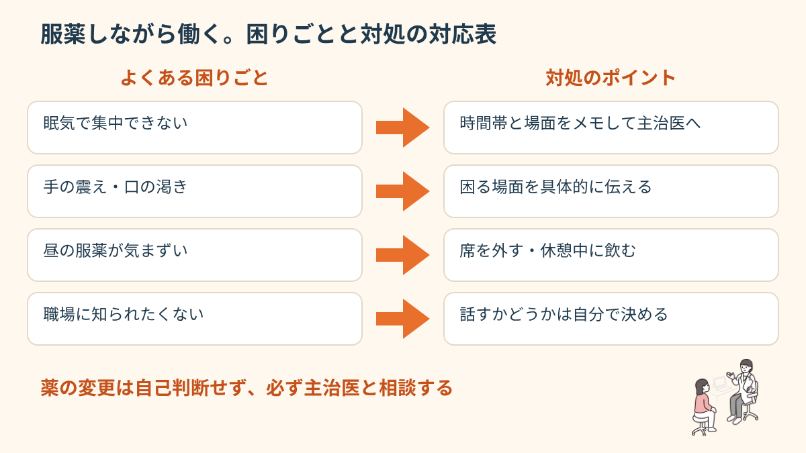
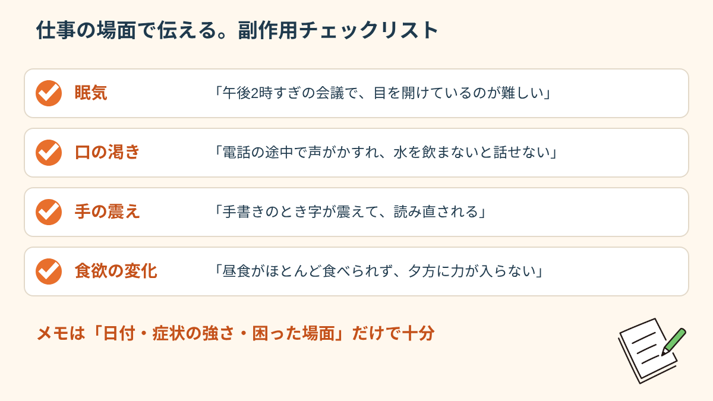
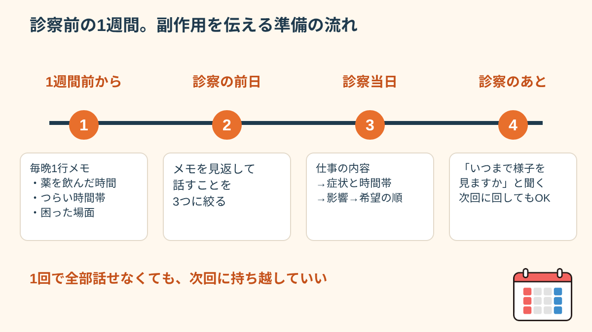
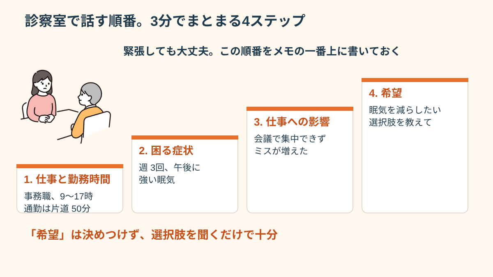
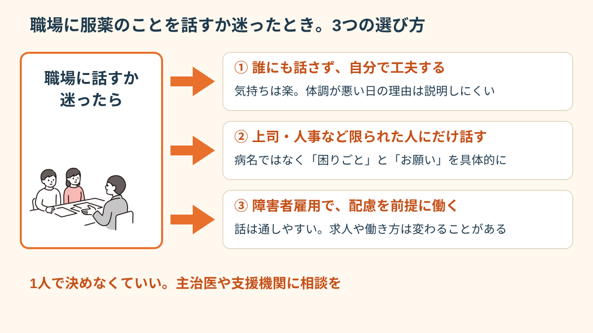

「眠気の副作用がひどくて仕事に集中できない」
「薬のことを職場に知られたくない」
精神科・心療内科の薬を服用しながら働く方から、こうした声をよく聞きます。薬を飲んでいることは、恥ずかしいことでも隠さなければならないことでもありません。この記事では、服薬と就労を両立させる基本的な考え方と、職場での現実的な対処方法を整理します。
服薬しながら働くことは「普通のこと」
精神科・心療内科の薬を服用しながら就労している方は、多く存在します。薬によって症状が安定し、就労が可能になっているケースも多いです。「薬を飲んでいるから就職できない」「薬が続く限り働けない」ということはありません。むしろ、薬を適切に管理しながら就労することが、多くの方にとって現実的な選択肢です。

はじめて働き始めた最初の2〜3か月は、通勤・人間関係・業務の覚えることが一度に増え、眠気やだるさが出やすい時期です。そのため「この眠さは薬のせいなのか、環境に慣れていない疲れなのか」が自分でも分かりにくくなります。分からないままがまんを続けると、「やっぱり自分は働けない」と結論を急いでしまいがちです。まずは「原因を切り分けるために、記録をとって主治医と一緒に見る」という考え方に置き換えてみてください。
はじめに、次の3つを自分に聞いてみましょう。①薬を飲む時間と、つらくなる時間帯は重なっているか ②休みの日にも同じ症状が出るか ③睡眠時間や食事の量は、働き始める前と変わっていないか。この3つの答えをメモしておくだけで、診察で話せる材料が大きく増えます。診断や薬の判断は医師の役割ですが、「材料を集める」のは今日から自分でできる作業です。
服薬の継続・変更・中止については、必ず主治医と相談して決めることが重要です。「仕事に就いたから薬を減らそう」と自己判断することは、症状の悪化・再燃につながることがあります。

副作用と仕事への影響。主治医に相談できること
精神科・心療内科の薬の副作用は、個人・薬の種類によって大きく異なります。眠気・体重変化・集中力の変化・手の震えなどが代表的な副作用ですが、多くの場合、薬の種類・量・服用時間の調整によって軽減できる可能性があります。「副作用で仕事がつらい」と感じた場合は、自己判断で薬を変えるのではなく、主治医に「就労に影響している副作用がある」と具体的に伝えることが重要です。
仕事の場面ごとに「困りごと」を言葉にする
副作用は、症状の名前より「仕事のどの場面で困るか」で伝えた方が、医師にも伝わりやすくなります。たとえば次のような言い方です。
- 眠気：「午後2時すぎの会議で目を開けているのが難しい」「通勤の電車で乗り過ごした」
- 口の渇き：「電話対応の途中で声がかすれて、水を飲まないと話し続けられない」
- 手の震え：「書類に手書きするとき、字が震えて読み直される」
- 食欲・体重の変化：「昼食がほとんど食べられず、夕方に力が入らない」
こうした具体的な場面があると、飲む時間を夜にまとめる、量や種類を見直す、といった相談の選択肢が検討しやすくなります。ただし、どの調整が合うかは人によって違うため、ここに書いた内容を自分で試すのではなく、必ず診察の中で相談してください。
「昼間の眠気が強くて仕事に支障が出ている」「手の震えが気になる」など、具体的に伝えることで、服薬タイミングの変更・薬の調整などの対処が検討されます。スマートフォンのメモなどに「日付・症状の強さ・困った場面」を簡単に記録しておくと、次の診察で正確に伝えやすくなります。

職場での服薬。「見られたくない」ときの対処
昼食後の服薬など、職場でのタイミングで「同僚に見られたくない」という方も多くいます。対処としては、トイレ・更衣室などのプライベートな場所で服用する、昼の服薬を医師に相談して朝晩2回にできないか確認する、などがあります。服薬していることを同僚に開示するかどうかは、あなたが決めることです。
職場で服薬するときの小さな工夫
昼の服薬が避けられない場合に、実際によく使われている工夫をいくつか挙げます。ピルケースに1回分ずつ小分けしておけば、取り出す動作が一瞬ですみ、周りの目が気になりにくくなります。水筒や小さめのペットボトルを自分の席に置いておくと、「薬のために席を立つ」ことが目立たなくなります。休憩時間に、お手洗いや休憩室の隅など、人の少ない場所で飲む方も多いです。
もう1つ大切なのが「飲み忘れたときの動き方」です。何時間以内なら飲んでよいのか、次の分とまとめて飲んでよいのかは、薬によって違います。自己判断で2回分を飲むのは避け、あらかじめ処方した医師か薬剤師に「飲み忘れたらどうするか」を聞いて、スマートフォンのメモに書いておくと、出先で慌てずにすみます。
「昼に薬を飲むのを見られたくなくて、トイレで隠れて飲んでた。支援員さんに相談したら、主治医に相談して朝だけに変えてもらえた。それで一気に楽になった。言えば解決できることって意外と多い。」
「薬を飲み続けること」へのためらいについて
「薬に頼っている自分はダメ」「いつか薬を卒業しなければ」という気持ちを持つ方は多くいます。しかし、精神科の薬は「症状を安定させるための手段」であり、服用していること自体は問題ではありません。薬の継続・減薬・中止は、必ず主治医と相談して時期と方法を決めることが重要です。「就職したから早く薬をやめたい」という焦りからの自己判断は、再燃のリスクを高めることがあります。
「減らしたい」という気持ちの裏には、たいてい理由があります。眠気がつらい、体重が気になる、薬に頼っている気がして不安、働き始めて調子が良いから、など人によってさまざまです。診察では「薬をやめたい」と結論だけ伝えるより、「眠気で仕事がつらいので、見直せる方法はないか」のように、困っていることと、望んでいることを分けて話すと、医師も選択肢を出しやすくなります。調子が安定している時期こそ、今後の薬について話すよい機会です。
診察の前に準備する。副作用を伝える1週間のメモと、3分の話し方
「診察は数分で終わってしまって、結局つらさをうまく伝えられなかった」。服薬しながら働く方からとてもよく聞く声です。診察の時間は限られているため、話す内容を事前に整えておくだけで、伝わり方が大きく変わります。ここでは、受診の1週間前から始められる準備を、具体的な場面と一緒に整理します。
1週間つけるメモの形
スマートフォンのメモアプリで十分です。1日の終わりに、次の4つを1行ずつ書きます。①薬を飲んだ時間 ②一番つらかった時間帯と、そのときの症状（眠気・震え・動悸のような感じなど） ③仕事で困ったこと（会議で意識が飛びそうだった、など） ④睡眠時間。完璧に書く必要はありません。3日分でも、何も無いより役に立ちます。
「毎回『なんとなく眠いです』としか言えなくて、先生も『様子を見ましょう』で終わっていました。メモに『毎日14時ごろが一番眠くて、先週は2回、会議中に寝落ちしかけた』と書いて見せたら、飲む時間を変える提案をしてもらえました。たった1行でも書いてあると、話が前に進むんだと知りました。」

診察で話す順番の例（3分版）
診察室では緊張して頭が真っ白になることもあります。次の順番をメモの一番上に書いておくと、話の流れを見失いません。
- 1つ目：今の仕事の内容と勤務時間（例：事務職、9時〜17時、通勤は片道50分）
- 2つ目：一番困っている症状と時間帯、頻度（例：週3回、午後に強い眠気）
- 3つ目：仕事への影響（例：会議で集中できない、ミスが増えた）
- 4つ目：希望（例：日中の眠気を減らしたい。飲む時間の変更が可能か知りたい）
4つ目の「希望」は、「こうしてほしい」と決めつける必要はありません。「選択肢があるなら教えてほしい」という聞き方で十分です。薬を変えるかどうかを決めるのは医師と本人の話し合いであり、メモはそのための材料です。

うまく伝わらなかったときの次の一手
メモを渡しても、「様子を見ましょう」と言われることはあります。そのときは、「いつまで様子を見て、どうなったら相談し直せばよいですか」と聞いてみてください。期間と目安が決まれば、不安を抱えたまま待つ時間が短くなります。それでも納得できない場合は、就労支援機関の支援員に同席や、診察で伝えたい内容の整理を手伝ってもらう方法もあります。相談先の考え方は、精神科・心療内科に初めて行くときの準備も参考にしてください。
職場に服薬のことを話すか迷ったとき。3つの選び方と相談先
「薬を飲んでいることを、職場に話したほうがいいのか」。これは、服薬しながら働く方がほぼ必ず一度は迷うテーマです。先に確認しておくと、服薬していることを職場に伝える義務は、基本的にありません。話すかどうかは本人が選べますが、選び方によって、受けられる配慮や気持ちの負担が変わります。ここでは3つの選び方を整理します。
選び方①：誰にも話さず、自分で工夫する
服薬のタイミングを調整したり、休憩時間にすませたりして、職場には話さない選び方です。気持ちの負担は少ない一方で、体調が悪い日に周りに理由を説明できず、「怠けている」と誤解される不安が残ります。通院で休む日の理由を、「通院です」とだけ伝えて続けている方も多くいます。
選び方②：上司や人事など、限られた人にだけ話す
必要な範囲の人にだけ、「服薬の影響で、午後に眠くなることがあります。その時間は集中しにくいので、重要な会議は午前にしてもらえると助かります」のように、病名ではなく、困りごととお願いを具体的に伝える選び方です。病名や薬の名前まで話す必要はありません。誰にどこまで話すかは、事前に自分で決めておくと安心です。
選び方③：障害者雇用の枠で、配慮を前提に働く
障害者手帳などをもとに、障害者雇用で働く選び方です。配慮を前提に話ができる反面、応募できる求人や給与、働き方が一般の求人と変わることがあります。開示する・しないの考え方は、オープン就労とクローズ就労の違いで詳しく整理しています。手帳については障害者手帳を取るべきか迷っているときも参考になります。

迷ったときの相談先
1人で決める必要はありません。次のような窓口で、話す範囲の整理を一緒にしてもらえます（制度や窓口の名称・内容は地域や時期で異なるため、利用前に各窓口で最新の情報をご確認ください。2026年10月時点の一般的な整理です）。
- 主治医・看護師・薬剤師：服薬のタイミングや、診断書への記載の相談
- 就労移行支援事業所・障害者就業・生活支援センター：職場への伝え方の整理、面談への同席
- 会社に産業医や相談窓口がある場合：社内でどこまで情報が共有されるかの確認
- ハローワークの専門援助窓口：障害のある方向けの求人や、配慮の相談
配慮の頼み方については、合理的配慮の頼み方も具体例があります。mimemimeの無料相談でも、「何をどこまで話すか」を一緒に整理できます。
- 服薬しながら働くことは多くの方がやっていること
- 副作用は「仕事に影響している」と具体的に主治医に伝える
- 職場での服薬・開示はあなたが選択できる
- 薬の変更・中止は自己判断しない。必ず主治医と相談
- 診察前に1週間のメモを用意し、困りごとは仕事の場面で伝える
- 職場に話す範囲は、病名ではなく困りごととお願いから決める